Donut Tutorial
Important
This is a companion guide to Blender Guru’s foundational Donut Tutorial
Disclaimers:
Videos for this tutorial are currently hosted on Dropbox which
limits their data and may result in a video not available error.
If demand is high enough, we will increase the bandwidth or find a more suitable provider.
Note
Why make a tutorial of a tutorial?
Proof of Work. This is a good way to document one’s progress through complexity.
This is a form of a digital notebook.
This is a good exercise in reducing complexity into simplicity.
Recalling a small particular step, is a large sequence of steps, is difficult.
This Donut Blender companion guide aims to act as a bridge, moving users from
‘no recall’ to ‘rote recall’.This guide is meant to be a ‘see-it-do-it’ guide, without having to pause and rewind videos.
This tutorial supports step by step following along, using two monitors.
This tutorial supports one screen setups and laptops by having vertical videos in some sections.
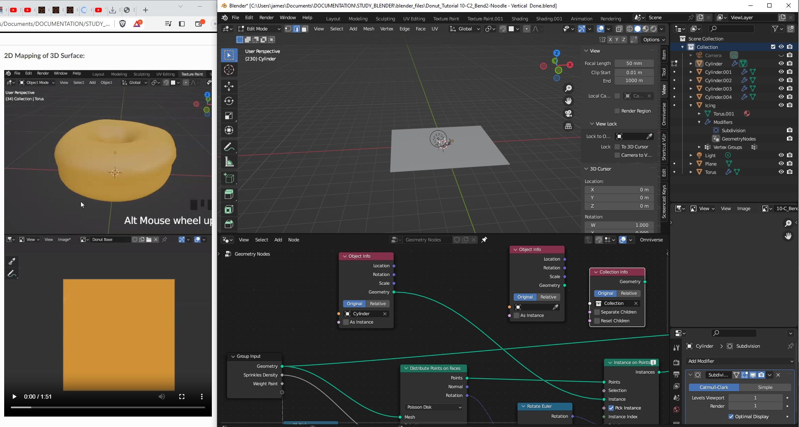This companion guide covers Parts 01 - 10 at this time.
Sphinx Documentation’s Search is only so-so, instead we suggest Cmd/Ctrl-F on the tutorial document.
This is an early release tutorial, please forgive typose, unclear text, etc.
The early tutorials use Short Cut VUr to display keystrokes. Most of the time.
Later we use the Screen Cast Addon which is recommended for greater reliability in documentating Hot keys, Pie and Pop-Up Menus. Screencast Github
Installing Screencast Keys may be helpful in some later sections as one can match the on screen keys with one’s own keys. A bit like the bouncing ball in Karaoke.
Trouble Shooting
While learning Blender, one may get stuck in states which yield odd behaviour.
Should this occur at any time in one’s learning journey, please refer to the list below.
Trouble Shooting Checklist
Turn Snapping Off (Shift + Tab)
Turn Proportional Editing Off (O)
Apply Scale (Ctrl + A)
Set Orientation Transformation Scale => Global
This icon looks like two arrows located at the top middle of the screen. 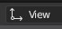
Part 01: The Basics
Object Mode, Edit Mode
Blender has two different modes to work in, Object and Edit Modes.
Each mode has restrictions on what commands can be delivered.
ie. ‘X’ to delete, works different in Object Mode vs. Edit Mode.
Edit mode is only available when an object is selected.
Change Resolution Scale of Interface.
Edit > Preferences > Interface > Resolution Scale.
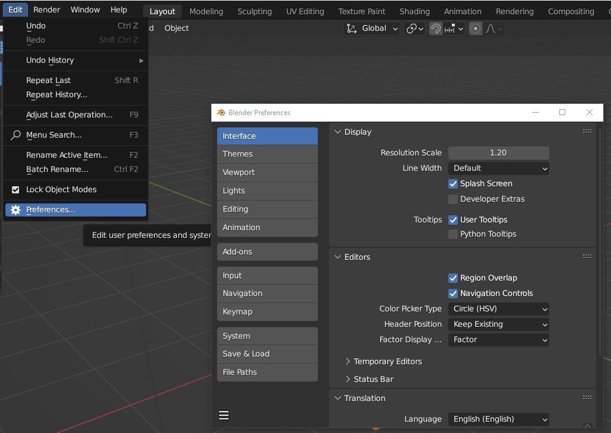
Change Material Colors
Material color changes are not interactive in the early tutorial sections,
and only show when rendered (F12) for now.
Note
Collections are the equivalent to Folders.
Part 02: Object Editing
Object Editing
Command |
Hotkey |
|---|---|
Add |
Shift + A |
Recall ‘Operator Presets’ |
F9 |
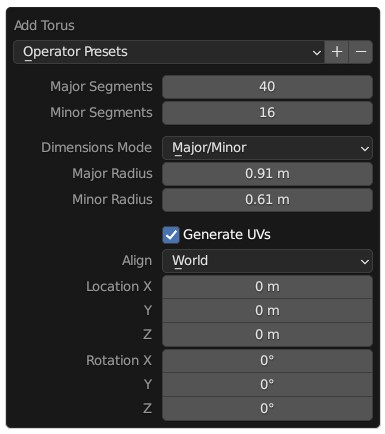
Note
Having an even number segments can help when unwrapping for UV’s or performing slices.
Having an odd number of segments may be helpful when trying to define the middle of an object.
Here we learn to ‘Apply Scale’.
Command |
Hot Key |
|---|---|
Apply Scale |
Ctrl + A |
Open Item Panel |
N |
Note
Here we scale the donut down from 3 meters to ~ 9 cm.
Blender’s default scale is in 1 meter, our Donut is around 9 centimeters.
The difference in scale effects the default settings of tools like radius: Proportional editing.
The scale should always be near to 1, 1, 1. When in doubt, Ctrl + A > Apply scale.
Apply Scale:
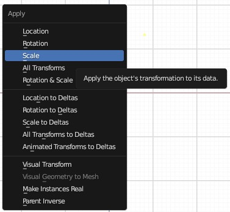
Blender Guru: Tutorial 02, Apply Scale
We can change the shading of our object by Selecting the object and right clicking over the background.
“Smooth shade is an illusion. It does not add any geometry.” - Blender Guru
Mouse |
Smooth Shade |
|---|---|
RMB over background |
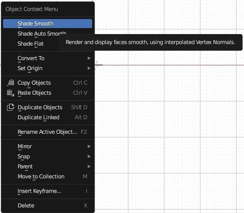 |
Target Section {#target-section}
Camera Lessons
Command |
Hot Key |
note |
|---|---|---|
1. Look Thru Camera |
Numpad - 0 |
toggles between camera and perspective view |
Command |
Hot Key |
note |
|---|---|---|
3. Select Donut |
||
4. Frame Selection |
Press Numpad - Period ‘ . ‘ |
|
5. Set Camera Position to Perspective View |
Ctrl + Alt + Numpad + 0 |
Extremely Useful Hot Key |
The camera snaps to the donut’s position.
Simple Way to Frame a Shot
Command |
Hot Key |
note |
|---|---|---|
Side Menu |
N |
|
View |
Select |
|
Activate ‘Camera to View’ |
Blue Checkbox |
|
Set Desired Camera Frame |
Pan, Rotate, Zoom |
|
Deselect ‘Camera to View’ |
Or we can leave on and press Numpad ‘0’ to exit |

Delicate Way to Frame a Shot
Note
Useful for dollying (moving towards or away from object) in fine increments.
Command |
Hot Key |
note |
|---|---|---|
Move Camera Frame |
||
1. Select Camera Frame |
Frame & Camera turn orange |
|
Camera must be visible |
||
2. Activate Grab Tool |
G |
|
3. Enter Smooth Zoom Mode |
Depress MMB |
Perspective view, we hold Ctrl + MMB to smooth Zoom |
4. Move Mouse Gently |
Important
With a split screen, we can also move the camera in a secondary viewport.
Command |
Hot Key |
note |
|---|---|---|
7. Render Camera View |
F12 |
Check view by rendering |
Subdivisions
Also known as “subd’s, subds, subsurf, subsurfaces”.
Subdivisions are a way to smooth our models while still maintaining control over their base wire frame / cage.
Subdivisions are typically added in object mode, but we can select the option to view the results in Edit mode.
We can toggle the visibility of the Subd’s for the viewport and the render.
Hot Key |
Pie Menu |
|
|---|---|---|
| Select Mode | ||
Ctrl + Tab |
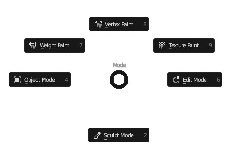 |
Proportional Editing
Command |
Hot Key |
note |
|---|---|---|
Proportional |
O |
Toggle |
Proportional Grab |
Select ( Vertice, Edge, Face ) + O + G + Scroll MMB Up |
Activate ‘O’ Before ‘G’ |
Scale Along Normals
Command |
Hot Key |
note |
|---|---|---|
Move Along Normals |
Alt + S |
Extremely Useful Hotkey |
Part 03: Modifiers
Create a Layer for Icing.
Separate by Selection
Command |
Hot Key |
note |
|---|---|---|
Wireframe |
Alt + Z |
|
Duplicate |
Shift + D |
‘esc’ to drop selection back in place |
Separate |
P [Selection] |
A Separate Layer Occurs |
If the selection has been dropped, Ctrl + L (Select Linked) |
Modifier: Solidify
Apply a Solidify modifier from Object Mode.
Smooth Offset with Shift + Drag
Note
The order of modifiers matters. The top modifier effects those below. Similar to order of Operations.
Apply Subdivision
Warning
Applying subdivision’s is destructive and cannot be undone. It is recommended:
Save As a copy of one’s un-modified Blender Project.
Duplicate Objects into Separate Layer before applying Subdivisions.
Prepare by Duplicating Object and Saving File > As Copy
Command |
Hot Key |
note |
|---|---|---|
Select Object |
Object Mode |
|
Duplicate Object |
Shift + D |
If snapping (Shift + Tab) is on the object (prim) will appear temporarily large. |
Drop Selection |
RMB |
|
Save Project |
File > Save As Copy |
We apply our Subdivision with a level of 1.
Command |
Hot Key |
note |
|---|---|---|
Move Subdivision Modifier to Top |
||
Apply Modifier |
Ctrl + A while hovering over Modifier |
Object Mode |
Select Drop Down Arrow |
Object Mode |
What is applied is what was in the viewport, not the render level.
Part 04: Modeling
Snapping
Snapping allows us to move a vertex along the face of the surface below.
Snapping |
Hot Keys |
|
|---|---|---|
Incremental (temporary) |
Ctrl |
|
Toggle Snapping |
Shift + Tab |
|
Button to the Right of ‘Snap’ |
||
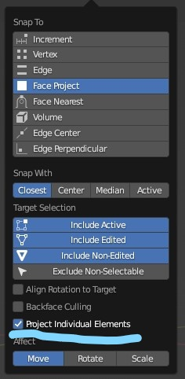 |
( Project Individual Elements ) allows nearby vertices to also conform to the surface below.
This acts like a radius falloff. Very important to activate.
Snapping |
Hot Keys |
|
|---|---|---|
Over Background |
RMB |
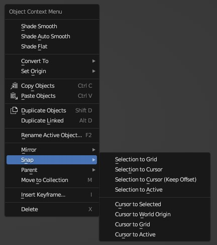 |
Deformation with Snapping Activated
Deform the icing to adhere to the faces of the donut.
When wire frames do not appear as expected, when can go to Edit mode, toggle keys [ 1, 2, 3 ]
We can also toggle the ( Display Modifier in Edit Mode ) button.
Select through MESH error
When selecting a vertex, it is possible to select points on the backside.
Shift + Z for X-Ray, or Hot Key Z > Wireframe to see that no other points are selected.
Fixing Mesh Occlusion
The mesh for the icing will be occluded by the donut’s base.
So we pull the mesh forward by activating Snap, Proportional Editing and pressing ‘G’
then dropping the selection. Do not drag the mouse, or move any points.
Command |
Hot Key |
note |
|---|---|---|
Activate Snapping |
Ctrl + TAB |
|
Activate Proportional Falloff |
O |
|
Move |
G |
|
Drop Selection |
[Esc, LMB ] |
Drop Selection without moving vertexes. |
Repeat Where Needed |
Camera Repositioning
Here we re-position the camera for a render.
The method above involves using ‘G’ to manipulate the camera.
Instead, we can easily manipulate the camera from the viewport.Simple Way to Frame a Shot
Command |
Hot Key |
note |
|---|---|---|
Set Camera to Current View |
Ctrl + Alt + Numpad 0 |
Highly used Hotkey Combo |
Side Menu |
N |
|
Select |
View |
|
Checkbox |
Activate ‘Camera to View’ |
|
Choose the Camera Frame |
Pan, Rotate, Zoom |
Normal navigation |
Deselect ‘Camera to View’ |
Or leave on and press Numpad ‘0’ to exit |
Cons:
Typically we can leave the camera view by pressing the MMB to escape, now we need to press ‘Num pad 0’ or uncheck ‘Camera to View’.
MMB Scroll to Zoom in and out does not allow for using ‘Shift’ for smooth increments.
Render Visibility
We observe that we are accidently rendering the original cube placed our scene and not our current view.
Note
A layer can be invisible in the viewport but will still appear in the render.
References
“I want to get a T-Shirt that says, ‘Reference, Reference, References’.. It is my biggest piece of advice for artists whenever they ask for feedback.” - Blender Guru
It is critical to switch to Object mode to enable the Add > Image > Reference option.
Actions |
Hot Key |
|---|---|
Switch to Object |
[ Tab, Pie: Ctrl + Tab ] |
Add Image to Current Viewport |
Shift + A |
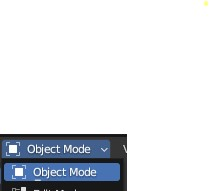 |
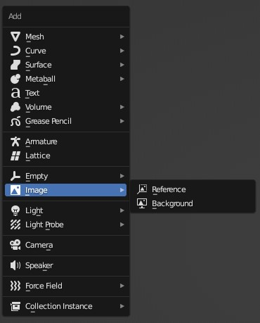 |
Here we show three different ways of adding references.
| Add > Image > Background | is best used when in Front, Top, or Right viewports.
The background image is only visible from the chosen viewport.
| Add > Image > Reference | projects an image onto a plane (card) from the current view.
Add [ Reference, Background ] are identical if performed from the perspective or camera views.
Apply Subdivisions
Here we add additional detail by applying the Subdivision surface.
Apply Subdivison Surface
Move Edges and Apply Second Sub Division Modifier.
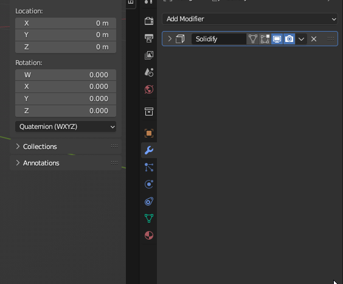
Extrude Edges
Make drips by extruding.
Command |
Hot Key |
note |
|---|---|---|
Extrude |
E |
Edit Mode |
Select Edges
Shrink the middle of the donut.
Command |
Hot Key |
note |
|---|---|---|
Select Edges |
Alt + LMB |
Edit Mode [ Vertices, Edges, Faces ] |
Contract Edge |
Alt + S |
Scale Along Normals |
Shrink Wrap Modifier
This is a second way to match the icing to the Donut.
Command |
Hot Key |
note |
|---|---|---|
Shrink Wrap |
Modifier |
Use Eye Dropper to Pick Target |
Move Modifier to top of Stack |
Blender Guru, Donut Tutorial, Part 4: Shrinkwrap Modifier.
Part 05: Sculpting
Adding greater details to our icing.
Warning
SAVE COPY scene before applying modifiers.
Apply Modifiers from top down before we begin sculpting.
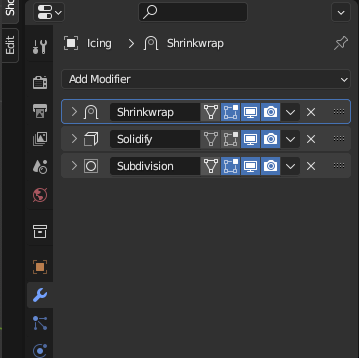
Draw
Select the Layout Sculpting Mode Tab.
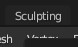
Command |
Hot Key |
note |
|---|---|---|
Sculpting |
Pie Menu: Ctrl + Tab [ Sculpting ] |
|
Draw, Pull [ Push ] |
X, [ Ctrl + Drag ] |
|
Grab |
G |
|
Change Radius |
F |
We will use this key combo in the future |
Strength of Radius |
Shift + F |
We will use this key combo in the future |
Smooth |
Shift + S |
Hold Shift to activate Smooth anytime |
Inflate |
I |
Ctrl to Deflate |
Show All Brushes |
Pop Up: Shift + Space Bar |
Inflate > Stroke > Airbrush
With Airbrush activated, we do not need to move the mouse to inflate the mesh.
Observe that the ‘Active Tool’ option is identical to our ‘N’ Slide panel.
‘Space’ in brushes, is the default setting which applies inflation upon cursor movement.
Inflate > Stroke > Space
Inflate using Tool > Inflate > Stroke > Space
Part 06: Rendering
Command |
Hot Key |
note |
|---|---|---|
Snap Light to Center |
Alt + G |
With light selected. |
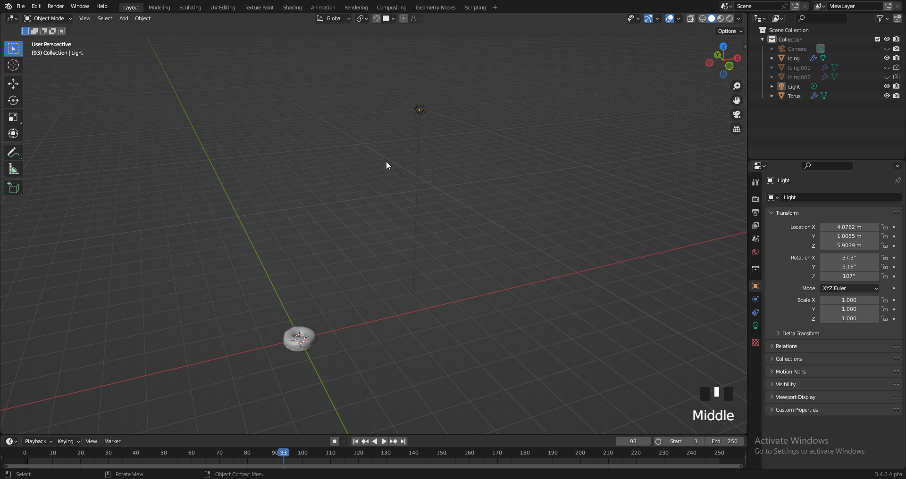
“Clear Location”
Move light up to 3/4 Position.
Reduce Lighting Power to 20.2W
Command |
Hot Key |
note |
|---|---|---|
Switch Rendered Mode |
Z |
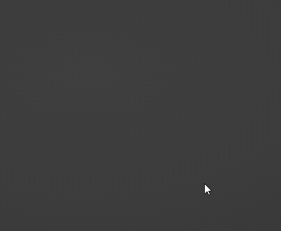 |
Rendered |
Materials |
Solid |
Wireframe |
|---|
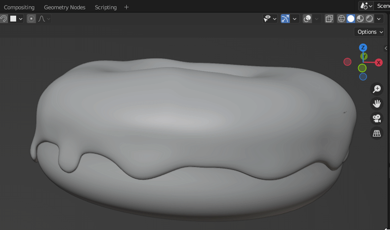
Change Viewport Display
Tip
Reduce the size of the camera in the viewport.
This does not work for lights.
Render Engines (EeVee, Cycles)
EeVee is the render engine that ships with Blender. Suitable for games. Cycles is a robust Ray Tracer.
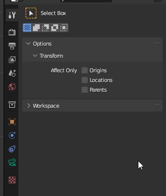
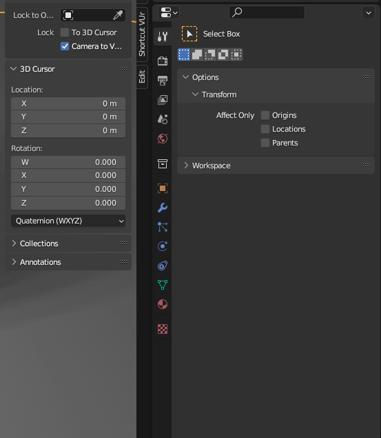
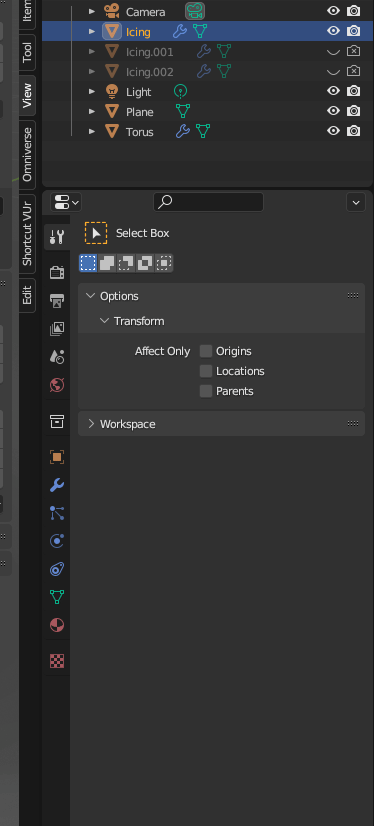
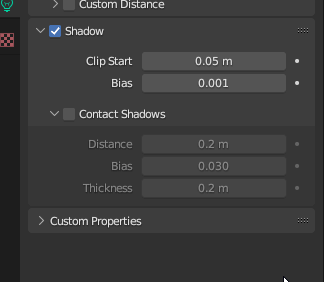
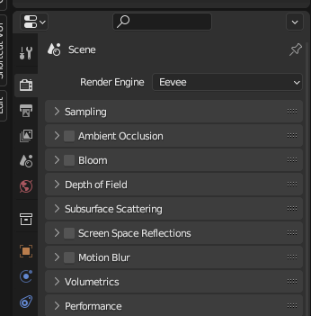
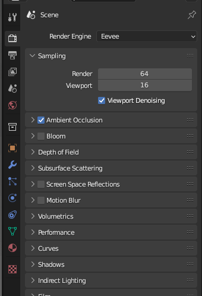
One can also add ‘Bloom’ for a bit of glare.
Add Hardware Acceleration (GPU)
{root file menu }
Edit > Preferences > System > Optix.
Use CUDA if Optix is n/a.
Note
There are render settings for the display and for final rendering.
Optix uses CUDA for speed, but in Part 15, Kevin mentions benefits to not using Optix.
Render to Slots
Slots act as Snapshots so we can flip through our renders.
Command |
Hot Key |
note |
|---|---|---|
View Slots |
[ 1, 2, 3, 4, 5.. ] |
Materials
Command |
Hot Key |
note |
|---|---|---|
Select Object |
LMB |
Object Mode |
Choose Material |
Select Icon |
|
Choose New |
Select |
Principled BSDF |
Add Colors to the Icing.
Adjust the Roughness to 0.150
Add Color to Donut.
Add Color to Plane.
Subsurface Scattering
Subsurface scattering allow objects to have a translucency or an apparent internal glow to themselves.
Command |
Value |
note |
|---|---|---|
Subsurface |
0.100 |
|
Subsurface Radius |
0.002 |
Select all three by dragging down |
Subsurface Color |
Base Color + 0.8 Saturation |
Drag Base Color to slot |
Command |
Hot Key |
note: Drag Color Swatch to Target |
|---|---|---|
Smart Copy |
Shift Select |
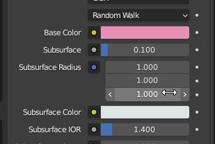 |
Material Preview to EeVee
By Selecting Scene Lights and Scene World we can access EeVee through ‘Z’ Pie Menu.
Samples and Noise
Important
More samples reduces noise but increases render times.
Label |
Value |
note |
|---|---|---|
Samples |
Set [ 100, 200 ] |
These are recommended samples for this size scene. |
Sampling is available under render engine ‘Cycles’ but not ‘EeVee’.
Viewport and Render have separate Samples and Noise attributes.
Note
Denoise for Render Defaults to CPU, not GPU.
We leave the noise threshold at it default value.
Part 07: Texturing & Shading
Note
Recommendation: PureRef is the standard tool for collecting reference photos.
“Real Donuts are not one solid color.”
“Base color, roughness value and normal map (bump mapping) are 90% of the materials you make will just use those three things.” -Blender Guru
Node Editor
Command |
Hot Key |
note |
|---|---|---|
Add Node |
Shift + A |
Equivalent to ‘Add Mesh’ |
Cut Noodle |
Ctrl + RMB |
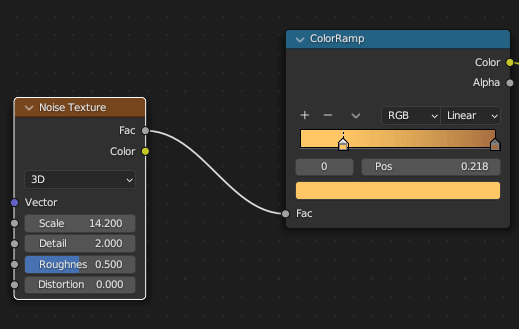 |
Lift Node |
Ctrl + X |
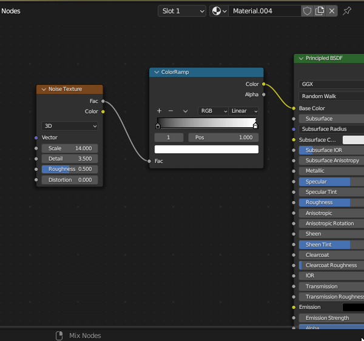 |
Note
Noise is one of the most commonly used Material nodes.
Actions |
Adjustments |
note |
|---|---|---|
Add Noise Node |
Connect ‘Fac’ to Base Color |
|
Adjust Parameters |
Set Scale ~ 15.0 |
Detail ~ 3.5 |
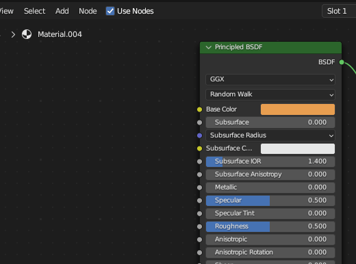
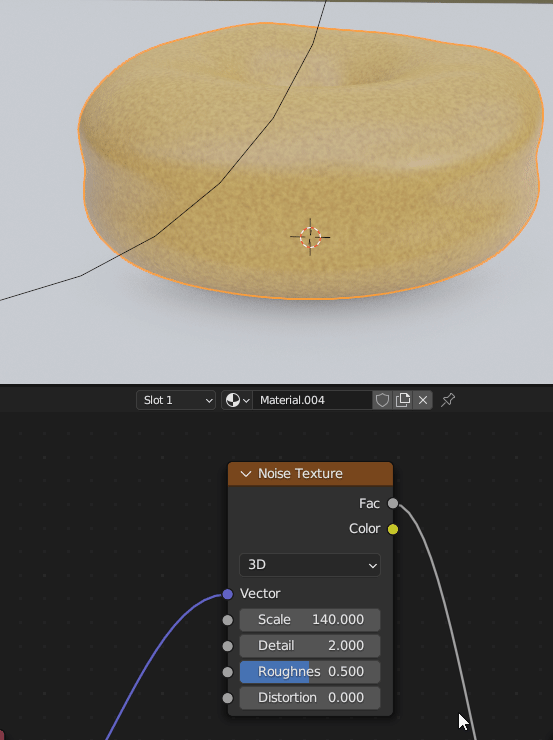
Command |
Hot Key |
note |
|---|---|---|
Add Color Ramp |
Adjust Scale of Ramp |
Important
Add Node Wrangler
This allows us to isolate nodes and preview them.
Command |
Hot Key |
note |
|---|---|---|
Preview Node |
Ctrl + Shift + Select |
Node Wrangler |
Command |
Purpose |
note |
|---|---|---|
Add Texture Coordinate Node |
Avoids Distortion in Center |
Use Object Connector |
Overview (with checker node added )
Close Up
Important
With our noodles, we typically connect like colors to other like colors, except for gray and yellow, which can be mixed.
Command |
|---|
Adjust: Scale, Detail |
Bump Map
Command |
|---|
Add Vector > Normal Map |
Steps:
Command |
|
|---|---|
Shift + A |
Add Vector > Normal Map |
Action |
Value |
|---|---|
Adjust Distance |
1.00 -> 0.002 |
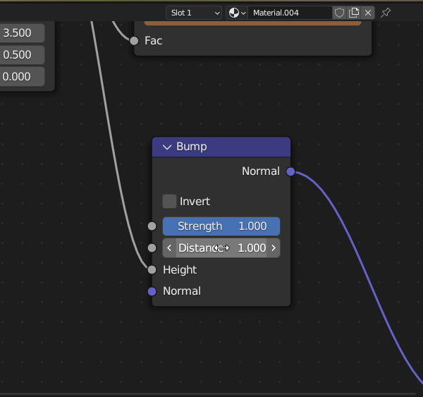
Important
Bump Strength Should Always be 1.0
Distance is given in Blender units, or 1 meter.
Be sure to connect Fac -> Height.
Part 08: Texture Painting
Action |
|
|---|---|
Shift + A |
Texture > Image Texture |
Note
The Donut will turn purple or black to indicate that no texture has been assigned yet.
We can add Image Texture quickly by using the Search function.
Action |
|---|
Add Texture |
Action |
|
|---|---|
Switch Tabs > Texture Paint |
|
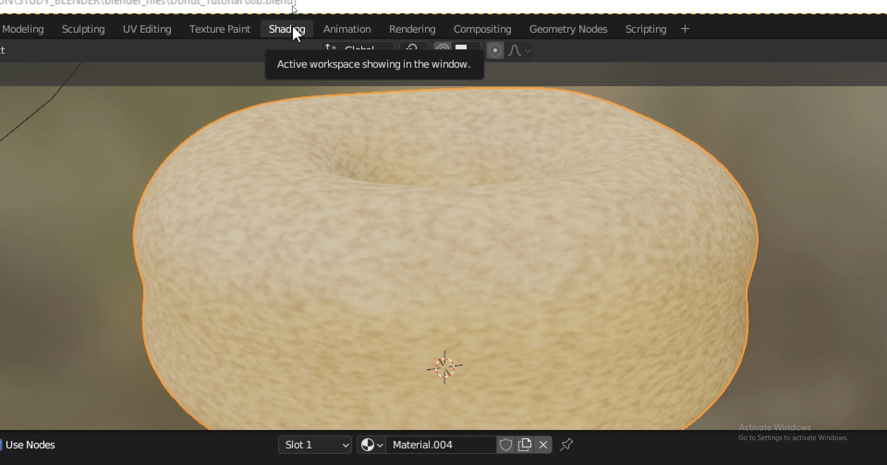 |
Action |
Value |
|---|---|
Change Object > Edit Mode |
Allows Selections to be Made |
Select Paint Mode |
Selections are displayed in Image Editor Window |
Optional: Rearrange screen for vertical friendly viewing.
Action |
|---|
Paint on Texture Image in 2d and 3d views. |
Breakdown:
Important
Draw Icon Be sure to click on the Draw / Paint icon (top left) in order to bring up the paint swatches.
Warning
Save the *image Texture File or it will be Erased.
On exit, Blender will offer a chance to save the file, one last time.
Action |
|---|
Save Texture (*image) file: |
Save *Image of Texture file.
Note
Overlay brightens and darkens the texture underneath it (basically increased contrast)
Multiply uses the dark in the layer below.
Add is the opposite of multiply.
Action |
note |
|---|---|
Delete Color Ramp |
We will no longer need this node. |
Warning
Search will not find ‘Mix Color’ Node. Might be a bug.
Action |
Value |
|---|---|
Add Mix Color Node |
User Defined Blue and Red |
Vertical Mode:
Action |
Value |
|---|---|
Connect A |
From Donut Base Color |
Connect B |
From Fac (Factor) of Noise |
Switch Mix |
Overlay |
Adjust Noise Texture |
Scale: ~7.0 or to one’s liking |
Adjust Mix Color |
Fac: ~ 0.67 or to one’s liking |
Part 09: Geometry Nodes
Command |
Action |
|---|---|
Review our Changes from Part 08 |
M (mute node) |
Turn on Plane, Lights, Icing |
Click on Eyeball in Outliner, Select Icing |
Create a New Tab Geometry Node Tab |
+ Menu > Geometry Node |
Close Spreadsheet Window |
RMB Over Panel > Join / Cross Hair from Left Corner |
Create First Geometry Node |
Click ‘+ New’ |
Toggle Visibility |
Select and Deselect Geometry Node in Modifier Stack |
Make Visibility Independent of Selection in Stack |
Select Pin |
Command |
Combination |
note |
|---|---|---|
Split Screens with Cross Hairs |
From a Corner, Drag a Window onto itself to split |
|
Join Screens with Cross Hairs |
Drag a Corner onto Adjacent window to merge |
Command |
Action |
Value |
|---|---|---|
Set Position Node |
Shift + A, Search > ‘Set Position’ |
|
Manipulate Z Position |
Shift + Drag on Z |
Command |
Action |
Value |
|---|---|---|
Add Point to Faces |
Shift + A > Point > Point on Faces |
Set to 500 |
Set to Zero |
Note
Observe:
The icing layer has been turned into points.
To preserve the layer and also have points, we need a ‘Join Geometry Node.’
Command |
Action |
Value |
|---|---|---|
Preserve Icing Layer |
Add (Shift + A) > Geometry > |
Join Geometry |
Create a Single Sprinkle to Reference.
Command |
Action |
Value |
|---|---|---|
Add Cylinder |
Add > Mesh > Cylinder |
|
Reduce Vertices |
Vertices |
32 to 8 |
Scale Down |
Properties or F9 |
Radius: 0.001 m | Depth: 0.001 |
Move to Side |
G (Grab tool) |
Numpad Keys 7, 1 for Top and Front |
Scale Z |
S + Z |
|
Scale Overall |
S |
“From one, come many.”
Command |
|---|
Shift + A > Instances > Instances on Points |
Drag Cylinder from Outliner to Graph |
Connect Object Info: Geometry -> Instance |
Apply Scale of Cylinder, Ctrl + A Scale |
Increase Density |
Command |
Action |
|
|---|---|---|
Rotate Cylinder, 90 |
R + X + Numpad (90) |
|
Apply Rotation |
Ctrl + A |
Select ‘Rotation’ |
Command |
Action |
|
|---|---|---|
Connect Rotation -> Rotation |
Drag Noodles |
|
Add Rotation Node |
Add > Utility > Rotate Euler |
Set to Local |
Command |
Action |
|
|---|---|---|
Add Random Values to Rotation |
Search ‘Random Values’ |
Vector: Z > 6.4 radians |
Not X, Not Y |
Set X, Y |
0.0 |
Random Value are given in radians (pi = 3.14 = 180 degrees)
Tau is equal to 2 pi. Both pi and tau can be entered as values.
To effect only values in the the Z, we use Random > Vectors.
Weight Paint
Blender Guru: Donut - Weight Paint
Limit sprinkles on some portions of the icing.
Remove sprinkles from the bottom of the icing.
Prepare for Weight Painting
Command |
Action |
Value |
|---|---|---|
View Underneath of Icing |
H - Hide Donut Base and Plane |
|
Select Icing |
*Important Step |
|
Switch to Weight Paint Mode |
Ctrl + Tab |
Weight Paint |
Make ‘Tool Bar’ Visible |
View > Toolbar |
|
Make ‘Tool Settings’ Visible |
View > Tool Settings |
Paint Weights
Note
The value of weights ranges between 0 - 1.
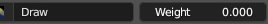
Command |
Action |
Value |
|---|---|---|
Select ‘Object Data Properties’ Icon |
Object Data Properties: 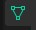 |
|
Paint on Surface |
Red where we want sprinkles. |
1.00 |
Green for less |
Strength < 1.00 |
|
Rename Vertex Groups |
‘Sprinkles Density’ |
Add Multiply Node
Command |
Action |
Value |
|---|---|---|
Expose Density Input to Modifiers |
Noodle ‘Density’ Back to Object Info |
|
Add Math Node |
Shift + A: Utility > Math |
|
Switch to ‘Multiply’ |
Change ‘Add’ > ‘Multiply’ |
Apply Vertex Weight Map to Sprinkles
Command |
Action |
Value |
|---|---|---|
Expose Density Value |
Noodle ‘Value’ Back to ‘Group Input’ |
|
View Density in Modifier Stack |
Change Values |
|
File > Save |
||
Toggle Input Attribute |
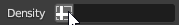 |
Num / Text Input |
Select ‘Sprinkles Density’ |
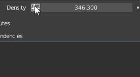 |
Reboot if N/A |
View Max Limits |
‘N’: Group > Value |
10,000 |
Blender Bug
You may need to restart Blender if you see a black box instead of ‘Sprinkles Density’. Be sure to SAVE.
Blender Guru, Apply Vertex Weight Map
Widescreen
Use Poisson to Reduce Clipping
Our Sprinkles intersect with one another. We can reduce this effect.
Command |
Action |
Value |
|---|---|---|
Select Distribute Points on Faces Node |
||
Select ‘Poisson’ |
Random > Poisson Disk |
|
Noodle Connect |
Density Factor -> Group Input |
|
Noodle Connect |
Density Max -> Value |
|
In Modifier Stack |
Increase Value |
10,000 |
Adjust Radius of Clipping |
Distance Min |
0.0056 m |
Increase Max Limit |
‘N’: Group > Value |
Max: 50,000 |
Rename Input Attributes |
Density -> Weight Paint |
|
Value -> Sprinkles Density |
Simplify Using Multiply Node
Adjusting a slider with a value of 50,000 is very slow. So we add a multiplier of 10,000 and hide it in the Geometry nodes.
Command |
Action |
|---|---|
Add Math Node |
Shift + A: Utilities > Math |
Switch to ‘Multiply’ |
‘Add’ > ‘Multiply’ |
Adjust Modifier ‘Value’ |
Set to 100 |
Set Multiplier ‘Value’ |
Set to 10,000 |
Adjust ‘Value’ in Modifiers |
Around 800 - 1000 |
Note
Paint Weight Value ranges from 0 - 1 but we want ‘Sprinkle Density’ to go up to 50,000.
Part 10: Random Colored Sprinkles
Blender Guru: Part 10: Random Colored Sprinkles
Edge loops offer an easy way to alter our models.
Here we use them to smooth the ends of our sprinkles.
In the real world, surfaces have bevels and not perfect 90 degree junctions.
Edge Loops
Command |
Action |
Value |
|---|---|---|
Object Mode |
Ctrl + Tab |
‘Object Mode’ |
Select Primary Sprinkle |
||
Add Subsurf Modifier |
Ctrl + 1 |
Level 1 Sub D |
Render [ 1 ] |
Level 1 |
|
Edit Mode |
Ctrl + Tab |
‘Edit Mode’ |
Select Edge Mode |
Keyboard ‘2’ |
Recommended but not required |
Add Edge Loop |
Hover, (Ctrl + R) |
Use Scroll Wheel to add Loops |
Add Two Loops |
Scroll Mouse Forward Once + Click |
|
Slide 2 Loops to Edge |
‘S’ + ‘Y’ |
Creates a Bevelled Edge |
View Results |
Oject Mode |
|
RMB > Shade Smooth |
Over Selection |
Important
Toggle Smooth Shade: Be sure to select an object, then RMB > Smooth Shade
In Edit Mode - we can use ‘A’ to Select All.
Alt + LMB to Select Edge Loop.
‘X’, Select ‘Edge Loops’

Move Pivot
Important
Learning to work with an object’s pivot point is important for most digital software.
Blender has an ‘Origin Point’ and a ‘3d Cursor’.
The “game” involves manipulating these two points in space.
Edit Mode > Shift + S: Cursor to Selected.
Object Mode > Object button > ‘Set Origin’ > ‘Set Origin to 3d Cursor’
Lessons from: Kev Binge: Blender Quick Tip to Move Object Origin and PivotWe can also use, Object Mode > Mesh > Snap
instead of ‘Cursor to Selected’: Snap CursorNudge 3d Cursor. From ‘N’: ‘View’ Tab > 3d Cursor Dropdown. Move 3d Cursor.
Command |
Action |
|---|---|
Move Pivot |
Pie Menu: Shift + S |
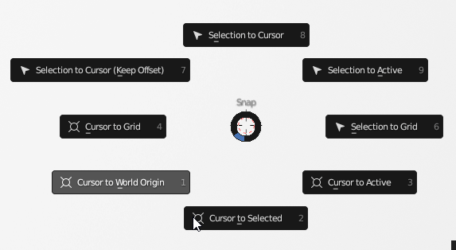 |
|
Example |
Note: Edit Mode > Hot key ‘A’ Selects all of the Cube |
|
|
Center Pivot |
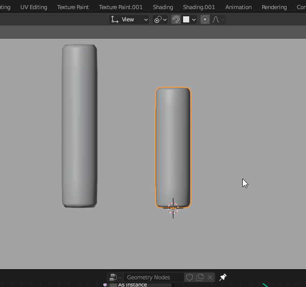 |
Object or Edit Mode > Shift + C || Shift + S : Cursor to World Origin |
|
Hide 3d Cursor |
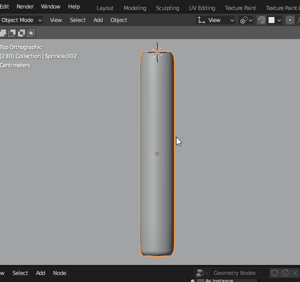 |

Center Pivot
Note
Center Pivot: Object Mode > Object button > Origin to Center of [Geometry, Mass, Volume]
Important
Shift + S > Cursor to World Origin.
This will “hide” the 3d Cursor at (0,0,0).Shift + C. Set 3D Cursor to Origin.
This will also return the cursor to the World Origin.
Add Variants of Sprinkle
We don’t want all our sprinkles to look alike. So we will add variations of shape and colors.
Duplicate Sprinkles
Duplicate three sprinkles and create different sizes.
Command |
Action |
note |
|---|---|---|
Switch: Object Mode |
Ctrl + Tab, Tab |
|
Top View |
Numpad 7 |
|
Full Screen |
Ctrl + Space (Optional) |
|
Duplicate |
Shift + D then X |
|
Move along X axis |
(Grab tool not needed) |
|
Switch to Edit Mode |
[ Ctrl + Tab, Tab ] |
|
Select Bottom Face |
Keyboard 3 + Select |
|
3d Cursor to Selected |
Shift + S |
|
Object Mode |
Ctrl + Tab |
|
Origin to 3d Cursor |
Object Button |
|
> Set Origin |
||
> Set Origin to 3D Cursor |
||
Make More Sprinkles |
Shift + D then X |
|
Shorten Sprinkles |
S + Y (Constrain on Y axis) |
|
Scale |
S |
Make Them Our Own |
Return 3d Cursor to World Origin |
Shift + C |
Bend Sprinkles
Next we bend our sprinkles.
Command |
Action |
|---|---|
Top View |
Numpad 7 |
Object Mode |
|
Select Last Sprinkle |
|
Validate Location of Rotation |
R |
Origin to Center of Object |
Object Button |
> Set Origin |
|
> Origin to Geometry |
|
Edit Mode |
Ctrl + Tab |
Add Edge Loop |
Ctrl + R, over Object |
Do not confirm |
|
Add 2 Loops |
Scroll MMB Forward |
Click to Confirm |
|
Switch to Faces |
Keyboard - 3 |
Select Loop |
Alt + Select |
Top View |
Numpad 7 |
Bend along X |
G + X |
Porportional Editing Mode |
O, Circle Dot |
Switch to Wireframe |
Z > Wireframe |
Select Top Row |
|
Rotate |
R |
Scroll MMB for Radius |
|
Rotate Bottom Row |
R |
Turn Proportional Mode Off |
O |
Switch to Solid |
Z > Solid |
Switch to Object Mode |
Ctrl + Tab |
Note
If the radius for proportional falloff does not appear, just keep scrolling forward.
Because the default radius is in meters and our scene is small, we need to scale the radius down using the MMB.
Add Second Sprinkle
Add a second bent sprinkle, same methods as before but with slightly different results.
Create Instances from the Collection of Sprinkles
Instead of our Instances referencing one Sprinkle, we have them reference the collection of Sprinkles.
Steps
Command |
Action |
|---|---|
Object Mode |
|
Practice Adding to Selection |
Shift + Click |
Box Selection Includes Plane |
|
Select from Front |
Numpad 1 |
New Collection |
M |
Name Collection |
Sprinkles |
Get Collection Info Node |
Select Sprinkles Collection in Outliner |
Drag Collection to Node Editor Graph |
|
Instance Points –> Collection Info |
Instance on Points: Instance |
-> Collection Info: Geometry |
|
Instance Points |
Check: Pick Instance |
Collection Info |
Check: Reset Children |
Check: Separate Children |
We show how to multi-select and link a material to multiple objects.
Command |
Action |
|---|---|
Remove Duplicate Sprinkle |
|
Switch to Material Review Mode |
Z > Material Review |
Practice Naming a Material |
|
Apply two Materials, Delete one |
|
Materials for all objects are based on last selection |
|
Link Materials |
Ctrl + L |
Icon 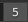 shows no. of Linked Objects to Material |
|
Unlink Objects |
Assign New Material |
Use ‘x’ |
|
box |
Add Color Ramp, Set it to Constant
Instead of assigning one color per sprinkle, if we use a random function and a Color Ramp to assign a variety of colors to any sprinkle in the collecton.
Command |
Action |
|---|---|
Hide Tools |
T |
Delete Material |
Materials Properties Tab > ‘x’ |
Add New Material |
Recommend Brown |
Select Four Objects |
(Outliner) |
Select Last Object |
(Outliner) |
Link Materials |
Ctrl + L |
Name Material |
‘Sprinkles’ |
Shading Tab |
|
Input > Object Info |
Shift + A: Input > Object Info |
Noodle |
Random -> Base Color |
Add Color Ramp |
Shift + A: Converter > Color Ramp |
Add Colors |
Gradient Blue to Pink |
Switch |
Linear > Constant |
Add five colors |
|
Blender Guru Pro Tip: |
Keep Saturation below 80%. |
Blender Guru Pro Tip: |
Non Uniform Distribution of Colors. |
Congratulations!
Those who made it this far have negotiated some of the most complex sequences of this tutorial. If you are reading this, it is either because you were curious and you jumped ahead, or you were determined to finish. Both traits are admirable. If it is the first, jump in. If it is the second, congratulations!